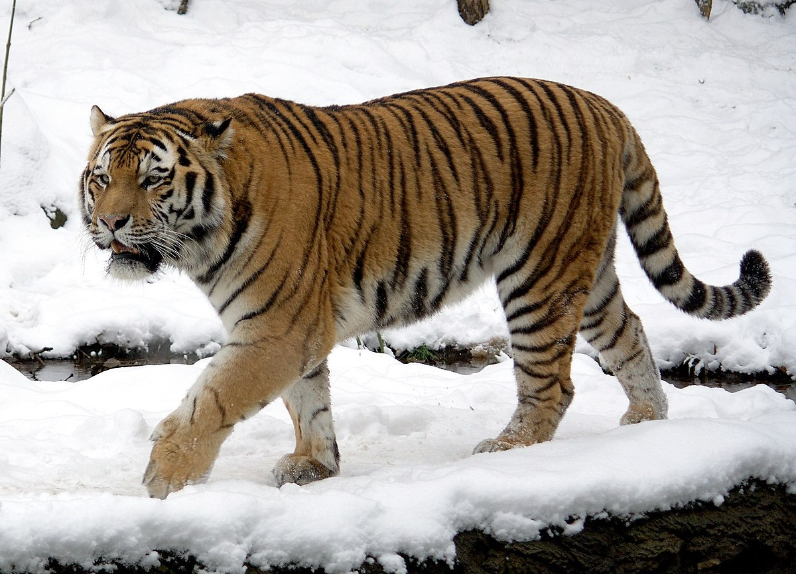

Today, we will be looking at many different animals ranging from land to water animals. Let's get started...

This here is one lazy cow, chilling on a hill. Cows are what give you your cereal milk and cheese. So, cows are very useful.
These posing horses are useful in the way that they gave us transportation. During the earlier times, when there were no cars or vehicles, horses were like a casual motorcycle, just not as fast. However, horses also helped us cultivate our food. That means that horses helped us prepare land for gardening and planting. So, like cows, horses are useful and cute!
Chickens are helpful in the way that they give us your casual breakfast eggs. Also, they make great pets!
Bees are helpful because they are incredible pollinaters. Not to mention, they are SUPER cute!

Though penguins mainly serve as a food source for predators, their cuteness makes up for it. However, being prey is helpful in some ways. For example, they play important parts in an ecosystem. Also, I think, they help fertilize landscapes.

Elephants are pretty cute! And, they help maintain forest and savanna ecosystems for other species.
Sea turles are incredibly cute and help maintain the health of water areas which valuable species live in (such as shrimp).
Snow leopards are a top predator. Because of this, they help maintain populations of herbivores. Also, they are a good indicator of climate change and other stuff.

Weirdly enough, Siberian tigers help reduce disaster risks such as flooding and tidal surging. But, they are scary, right? Just look at that face!
Do next: how do eagles help the world, how do orcas help the world, how do polar bears help the world and more.